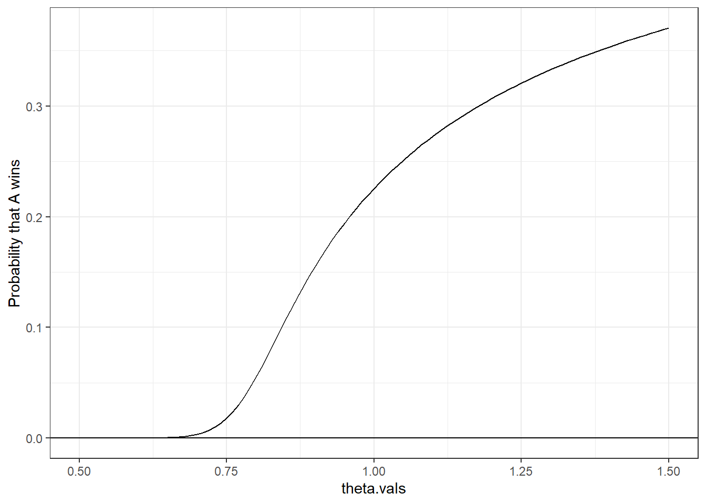

Complete the tasks below. Make sure to start your solutions in on a new line that starts with “Solution:”.
Make sure to use the Quarto Cheatsheet. This will make completing and writing up the lab much easier.
Make sure to use “enter” to make your code readable, so it doesn’t run off the page. I switched the Quarto document to automatically render to .pdf, so you can see what you’re submitting by default. You can switch back for the highlighting by moving the html block above the pdf block in the YAML header.
Don’t forget that you can copy-and-paste code when you’re doing something similar as we did in class!
Make sure to plot all computed probabilities. This is good ggplot practice AND will help make sure you don’t make a mistake when computing the probability.
1 Lab 8 Notes
1.1 Altham’s Multiplicative Binomial Distribution
The PMF for Altham’s Multiplicative Binomial Distribution is \[f_X(x) = \frac{1}{c} {n \choose x} p^x (1-p)^{n-x} \theta^{x(n-x)}I(x \in \{0, 1, ..., n\})\] where \[c = \sum_{i=0}^n {n \choose i} p^i (1-p)^{n-i} \theta^{i(n-i)}.\] Just so we start on the same page, I have included my R function for computing probability using this distribution.
2 Altham’s Multiplicative Beta Binomial Distribution
The PMF for Altham’s Multiplicative Beta Binomial Distribution is \[f_X(x) = \left[\int_{0}^1 \left(\frac{1}{c} {n \choose x} p^x (1-p)^{n-x} \theta^{x(n-x)}\right)\left(\frac{\Gamma(\alpha+\beta)}{\Gamma(\alpha)\Gamma(\beta)} p^{\alpha-1}(1-p)^{\beta-1}\right) dp\right]I(x \in \{0, 1, ..., n\})\]
Just so we start on the same page, I have included my R function for computing probability using this distribution.
Code
daltbbinom.single <-function(x, size, alpha, beta, theta){ integrand <-function(p) {sapply(p, # integrate will pass in a vector, so we use sapply to apply the followingfunction(p_val){# f(x|p) * f(p|alpha, beta)daltbinom(x, size, p_val, theta) *dbeta(p_val, alpha, beta) } ) }# Probability Mass at x=x# integrate(integrand, lower = 0, upper = 1)$value * (x>=0)*(x<=size)# I shrink the bounds below to avoid log(0)=-infinty# I use try() to catch when there is an error and avoid crashing res <-try(integrate(integrand, lower =1e-7, upper =1-1e-7)$value * (x>=0)*(x<=size), silent =TRUE)# If there is an error, return a near-zero probabilityif(inherits(res, "try-error")) return(0.1^6) res}# Write a function that works on a vectordaltbbinom <-function(x, size, alpha, beta, theta){sapply(X=x, FUN=daltbbinom.single, size=size, alpha=alpha, beta=beta, theta=theta)}
3 Question 1
In Lab 8, we use Altham’s Multiplicative Binomial Distribution. Your job was to interpret the impact of \(\theta\) in that equation. In this lab, we will model the number of legs won in a best of eleven (first to six) match.
To help us think about the interpretation, something that was challenging before, let’s try something a little more manageable.
3.1 Part a
Suppose a player has a 50% chance of winning a specific leg, that is let \(p=0.50\). Let’s look at the probability they win (\(x=6\)) legs in the match. Compute this probability over a sequence from \(\theta=0.5\) to \(\theta=1.5\) and plot it using a line where the \(x\)-axis is \(\theta\) and the \(y\)-axis is \(P(X=6)\).
Solution:
Created a sequence from 0.5 to 1.5 and created a tibble with the probabilities of the theta values in that range then plotted them using geom_line()
Code
# size: scriptsizetheta.vals<-seq(0.5, 1.5, by=0.01) # theta vals from 0.5 to 1.5# tibblegg.dat<-tibble(theta.vals) |>mutate(PMF=daltbinom(size=11, prob=0.50, x=6, theta=theta.vals))# plotPMF.plot<-ggplot(data=gg.dat)+geom_line(aes(x=theta.vals,y=PMF))+geom_hline(yintercept=0)+theme_bw()+ylab("Probability that A wins")PMF.plot

3.2 Part b
Now, plot Altham’s Multiplicative Binomial Distribution under the same parameters with \(\theta=0.50\), \(\theta=1\), and \(\theta=1.5\). Use ncol=1 in facet_wrap() to plot the PMFs in a single column for comparing
Solution
Plotted Altham’s Multiplicative binom PMF with different theta values in a single column using facet_wrap
What is your best assessment of what \(\theta\) is doing in this setting. Consider when a 6-0 blowout is most likely, and when a 5-6 nail-biter is most likely. Note here we should treat the match as a fixed \(n=11\) as we did for \(n=3\) in Lab 8. Note: In lab 8, we saw that small \(\theta\) meant wins came in bunches (clumped together), so there were more 2-0 wins in a best of three series.
Solution
The theta controls how the wins are spread out during the 11 legs. When theta<1 (0.5), wins happen in bunches so extreme results like 6-0 are more likely. When theta=1, the results are more evenly spread, and when theta>1 (1.5), the outcomes are more balanced and cluster around the middle, so close matches like 6–5 become more likely
4 Question 2
4.1 Part a
Altham’s Multiplicative Binomial Distribution does not typically simplify to the clean \(E(X)=np\) seen in the Binomial distribution, unless \(\theta = 1\). Write out the expression that would need to be solved to find \(E(X^k)\), and then write a function that computes it given the proposed parameter values \(p\) (prob) and \(\theta\) (theta).
Solution
Created a function compute.altbinom which sums all values from 0 to size for x^k * daltbinom()
Describe how you can use your answer to part a to find Method of Moments estimates for the parameters \(p\) and \(\theta\) for Altham’s Multiplicative Binomial Distribution based on data.
Solution
I would use the formula in the variable compute.altbinom to get the population moments then set them equal to their corresponding sample moments. I would then use that to find the Method of Moments estimates for params p and theta
4.3 Part c
Write a function that computes the log-likelihood for Altham’s Multiplicative Binomial Distribution, given data (x) and proposed parameter values \(p\) (prob) and \(\theta\) (theta).
Solution
Created a function loglik.altbinom to find the log-likelihood for Altham’s Multiplicative Binomial Distribution
Code
# size: scriptsize# function that finds the log likelihoodloglik.altbinom <-function(x, size, prob, theta){sum(log(daltbinom(x, size=size, prob=prob, theta=theta)))}
4.4 Part d
Describe how you can use your answer to part c to find Maximum Likelihood estimates for the parameters \(p\) and \(\theta\) for Altham’s Multiplicative Binomial Distribution based on data.
Solution
I would use the function in part c to find the log likelihoods for different values of p and theta and find the pair with the greatest log likelihood value which would give me the Maximum Likelihood estimates.
5 Lab 10
Peter “Snakebite” Wright is a two-time Professional Darts Corporation World Champion (2020, 2022) and a former World No. 1. He is one of the sport’s most decorated players, winning nearly 50 PDC titles including the World Matchplay, UK Open, and multiple European Championships.
In 2024, he made The Premier League – a league involving the eight best players that runs every Thursday night from February to May. In this season, he won two of eighteen matches, securing only four points. The spread in legs won was -43, meaning he lost 43 more legs than he won. This performance was rather quite bad. He was soundly trounced in almost all his match ups.
The 2024 standings are below:
Rank
Player
1
Luke Littler
2
Luke Humphries
3
Michael van Gerwen
4
Michael Smith
5
Nathan Aspinall
6
Rob Cross
7
Gerwyn Price
8
Peter Wright
5.1 Summarize the 2024 Data
In pdc2024.csv, I have provided the data for the 2024 Premier League season. There are a few data cleaning steps to consider.
Remove any matches with no Score (e.g., a bye or walkover)
Nights 1 through 16 are best of 11 (first to 6), but the playoffs are extended. For consistency, keep nights 1 through 16 only.
Make two columns WinnerLegs and LoserLegs that keep track of the number of legs each player has won
Summarize the data. What do the data tell us about the breakdown of the results?
Solution
Read the csv file and cleaned the data by removing matches with missing scores, w/o, and keeping only nights 1–16 then separated the Score column into WinnerLegs and LoserLegs. Summarized the resulting data.
Code
# read csv fileprem.dat<-read_csv("pdc2024.csv")# clean datprem.dat.cleaned <-prem.dat |>filter(!is.na(Score)) |># only none null valuesfilter(Score !="w/o") |># remove values shown as w/ofilter(Night <=16) |># nights 1-16separate(Score, into=c("WinnerLegs","LoserLegs"), sep="-") # seperated by -head(prem.dat.cleaned)
# A tibble: 6 × 7
Night Round Winner WinnerLegs LoserLegs Loser Venue
<chr> <chr> <chr> <chr> <chr> <chr> <chr>
1 1 Quarter-Final Rob Cross 6 3 Peter Wright Card…
2 1 Quarter-Final Gerwyn Price 6 4 Nathan Aspinall Card…
3 1 Quarter-Final Michael Smith 6 5 Michael van Gerw… Card…
4 1 Quarter-Final Luke Littler 6 2 Luke Humphries Card…
5 1 Semi-Final Gerwyn Price 6 2 Rob Cross Card…
6 1 Semi-Final Michael Smith 6 5 Luke Littler Card…
For each player in the 2024 season, use the number of legs won in each match to compute maximium likelihood estimates for \(p\) and \(\theta\). Note: The “for each” here can be done more efficiently with a function or a loop!
Create a vector containing the number of legs won by the player. Note sometimes you will need to pull from winner’s legs and sometimes from the loser’s legs.
Find the MLE for the player using this data. Ensure to report \(p\) and \(\theta\) for each player in a nicely formatted table. Note: In Lecture on Monday, we used transformations to restrict how optim() searches the parameter space. For example, here, you might consider p <- 1/(1+exp(-par[1])) and theta <- exp(par[2]).
Make comments about the MLEs in the context of the standings.
Solution
Created a vector of all players and used looped through it to compute the MLE for each player. For each player, I filtered the matches they played, made a vector of number of legs won, and calculated total legs in each match then used optim() with transformed parameters to estimate p and theta.
Code
# size: scriptsizeplayers<-unique(c(prem.dat.cleaned$Winner, prem.dat.cleaned$Loser))# variables to store valuesp_estims<-rep(NA, length(players))theta_estims<-rep(NA, length(players))# Define negative log-likelihood function for Altham's multiplicative binoml.likely<-function(par, x, size, neg =FALSE){# transformations for parameters p<-1/ (1+exp(-par[1])) theta<-exp(par[2])# Compute log-likelihood using the Altham binom PMF ll<-sum(log(daltbinom(x=x, size=size, prob=p, theta=theta)))# Return negative log-likelihood when neg=TRUE in optimifelse(neg, -ll, ll)}# loop through each playerfor(i in1:length(players)){ player<-players[i]# Matches matches<-prem.dat.cleaned |>filter(Winner==player|Loser==player)# legs won by player legs_won<-as.numeric(if_else(matches$Winner==player, matches$WinnerLegs, matches$LoserLegs))# total legs by player total_legs<-as.numeric(matches$WinnerLegs) +as.numeric(matches$LoserLegs)# find MLE with optim res<-optim(par=c(0,0), fn=l.likely, x=legs_won, size=total_legs, neg=TRUE)# Convert and store in variable p_estims[i]<-1/(1+exp(-res$par[1])) theta_estims[i]<-exp(res$par[2])}# store values(3dp) in tibbleresults <-tibble(Player=players,p=round(p_estims,3),theta=round(theta_estims,3))(results)
# A tibble: 8 × 3
Player p theta
<chr> <dbl> <dbl>
1 Rob Cross 0.437 1.04
2 Gerwyn Price 0.474 1.03
3 Michael Smith 0.543 1.08
4 Luke Littler 0.636 1.12
5 Nathan Aspinall 0.506 1.10
6 Luke Humphries 0.504 1.03
7 Michael van Gerwen 0.484 1.07
8 Peter Wright 0.005 5.09
Comments
The players with higher estimated p values generally seem to match the stronger players in the standings, since a larger p means they were more likely to win legs overall while players with lower p values were usually the ones lower down the table, since they won fewer legs on average. The theta values control the pattern and how spread out the wins were. Players with smaller theta values tended to have results that were more uneven, while players with larger theta had matches that were more balanced.
5.3 Altham’s Multiplicative Beta Binomial Distribution
For each player in the 2024 season, use the number of legs won in each match to compute maxmium likelihood estimates for \(p\) and \(\theta\). Note: The “for each” here can be done more efficiently with a function or a loop!
Create a vector containing the number of legs won by the player. Note sometimes you will need to pull from winner’s legs and sometimes from the loser’s legs.
Find the MLEs for the player using this data. Ensure to report \(\alpha\), \(\beta\), and \(\theta\) for each player in a nicely formatted table. Note 1: Due to the computational complexity of integrate(), you should compute the logged probability for 0:6 once and add them according to the data in each player’s vector. Note 2: In Lecture on Monday, we used transformations to restrict how optim() searches the parameter space.
Plot the underlying Beta(\(\alpha\), \(\beta\)) distribution for each player. Note: Add the mean and variance of the Beta to the table of MLEs. Recall \[\begin{align*}
E(X) &= \frac{\alpha}{\alpha+\beta}\\
sd(X) &= \sqrt{\frac{\alpha\beta}{(\alpha+\beta)^2(\alpha+\beta+1)}}
\end{align*}\]
Make comments about the MLEs in the context of the standings. Note: The players alternate who throws first in a leg has the mathematical “head start” to reach a finish before their opponent can take another turn. Players alternate who throws first with each leg.
Solution
Used a loop to estimate alpha, beta, and theta values for each player using Altham’s Multiplicative Beta-Binom. I created a vector of legs won across matches for each player and computed negative log likelihood. I also computed the mean and standard deviation of the corresponding Beta distribution and summarized the results in a table for all players.
Code
# size: scriptsize# variables to store valuesalpha_estims<-rep(NA, length(players))beta_estims<-rep(NA, length(players))theta_estims<-rep(NA, length(players))beta_mean<-rep(NA, length(players))beta_sd<-rep(NA, length(players))# negative log-likelihood for Altham multiplicative beta-binoml.likely.bb<-function(par, x, neg =FALSE){# transformations alpha<-exp(par[1]) beta<-exp(par[2]) theta<-exp(par[3])# calculate prob for 0:6 probs<-sapply(0:6, daltbbinom.single, size=11, alpha=alpha, beta=beta, theta=theta)# log-likelihood ll<-sum(log(probs[x+1]))ifelse(neg, -ll, ll)}# loop through playersfor(i in1:length(players)){ player<- players[i]# matches matches<- prem.dat.cleaned |>filter(Winner == player | Loser == player)# legs won legs_won<-as.numeric(if_else(matches$Winner==player, matches$WinnerLegs, matches$LoserLegs))# MLE with optim res<-optim( par=c(0, 0, 0), fn=l.likely.bb, x=legs_won, neg=TRUE)# convert and store in variable alpha_estims[i]<-exp(res$par[1]) beta_estims[i]<-exp(res$par[2]) theta_estims[i]<-exp(res$par[3])# beta mean and sd beta_mean[i]<- alpha_estims[i]/(alpha_estims[i] + beta_estims[i]) beta_sd[i]<-sqrt((alpha_estims[i]*beta_estims[i])/ ((alpha_estims[i] + beta_estims[i])^2* (alpha_estims[i] + beta_estims[i] +1)))}# results in tibbleresults<-tibble(Player=players,alpha=round(alpha_estims, 3),beta=round(beta_estims, 3),theta=round(theta_estims, 3),Mean=round(beta_mean, 3),SD=round(beta_sd, 3))results
# A tibble: 8 × 6
Player alpha beta theta Mean SD
<chr> <dbl> <dbl> <dbl> <dbl> <dbl>
1 Rob Cross 0.66 1.86 1.53 0.262 0.235
2 Gerwyn Price 8.72 15.9 1.11 0.355 0.095
3 Michael Smith 0.348 0.596 3.44 0.369 0.346
4 Luke Littler 0.579 0.587 5.84 0.497 0.34
5 Nathan Aspinall 2.82 5.61 1.51 0.335 0.154
6 Luke Humphries 0.217 0.505 4.91 0.3 0.349
7 Michael van Gerwen 0.211 0.535 4.74 0.283 0.341
8 Peter Wright 0.372 83.5 3.77 0.004 0.007
5.4 Executive Summary
Summarize the work you’ve done here to provide a brief (200-300 word) data-driven summary of the 2024 Premier League season using your work in Lab 10. Your summary should be professional, clear, and all claims should be corroborated with statistical support.
Solution:
In the lab, I analysed match results from the Premier League season using Altham’s Multiplicative Binomial and Altham’s Multiplicative Beta-Binomial models. After cleaning the dataset by removing matches without scores and restricting the analysis to nights 1–16, I summarized the number of legs won in each match and used the values to estimate model parameters p and theta for each player. Using maximum likelihood estimation, I estimated the parameters p and theta for each player in the Altham Multiplicative Binomial model. The parameter p represents the player’s probability of winning a leg, so higher values of p show stronger overall performance. Players who finished higher in the standings had larger estimated p values, reflecting their higher likelihood of winning legs in that season while players lower in the standings had smaller p values, showing fewer legs won on average. The theta values affect how the wins are spread across the legs in a match. Smaller theta values show results that are more uneven with blowout results being more likely. Larger theta values indicated outcomes that were more balanced, with results clustering closer to the middle and matches being more competitive. I also estimated parameters for the Altham Multiplicative Beta-Binomial model, which models the probability of winning a leg from a Beta distribution. The estimated Beta means and standard deviations provided additional information about player consistency. The models showed that stronger players win more legs on average and produce more consistent match outcomes compared to players lower in the standings.